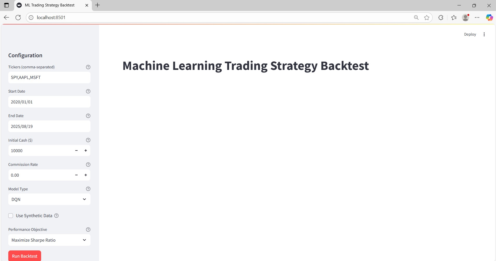
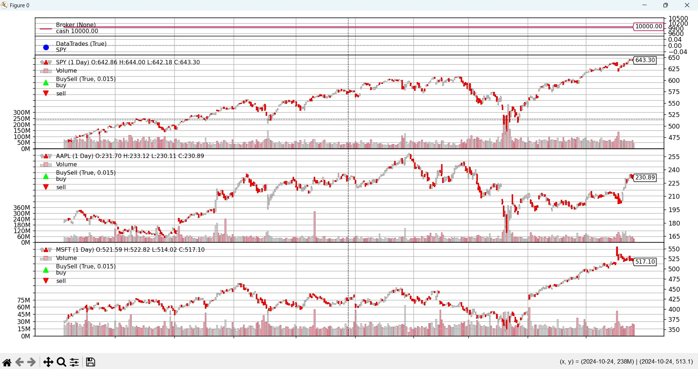
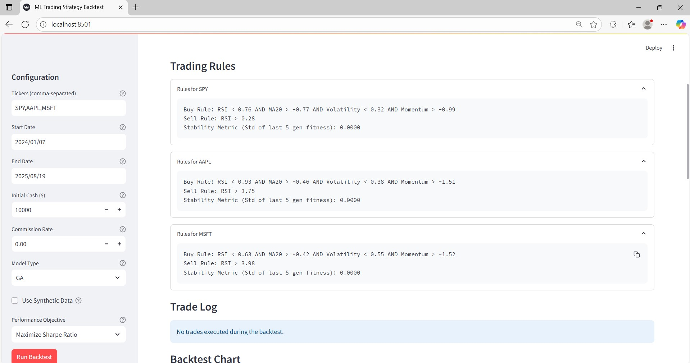

AI Agent Stock Prediction System
GitHub Repository:
Code Contribution (backtest_ml_strategy.py)
Commits/PR History:
GitHub PRs (Closed)
Overview
This project implements an Automated Machine Learning-Based Strategy Generation and Optimization system for algorithmic trading. It integrates Deep Q-Networks (DQN) and Genetic Algorithms (GA) with a backtesting framework that supports multi-asset strategy execution.
I contributed across all development sprints from building ML models to testing, interpretability, visualization, export features, and logging.
My Responsibilities
- Developed Deep Q-Network (DQN) agent for trading strategy learning.
- Implemented Genetic Algorithm (GA) for evolving rule-based strategies.
- Created preprocessing pipeline for multi-asset compatibility, normalization, and data validation.
- Integrated ML-generated signals into the backtesting engine.
- Extracted interpretable strategy representations: decision trees (DQN) and rule sets with stability metrics (GA).
- Built an interactive Streamlit UI with performance metrics, equity curves, signal overlays, and convergence plots.
- Implemented strategy export as Python scripts and auto-generated PDF reports.
- Added robust error handling and logging for model and execution issues.
- Wrote unit tests and integration tests covering all components and edge scenarios.
Sprint Breakdown
Sprint 1: Minimal Viable Product
User Story: US614
As a trader, I want an automated system integrated into a backtesting framework that generates and optimizes trading strategies using Deep Q-Networks (DQN) and Genetic Algorithms (GA).
Conditions of Satisfiability:
- Input validation: tickers, date ranges, model selection, and objectives
- Strategy generation using DQN and GA
- Multi-asset support
- Performance metrics: Sharpe ratio, annualized return, equity curve
- Interpretability: DQN → decision trees, GA → rule sets with stability metrics
- Visualization and export functionality
- Robust error handling with user feedback
Tasks:
- DQN Strategy Generator (8h)
- GA Strategy Generator (8h)
- Data Preprocessing (4h)
- Validation with Synthetic Data (2h)
Sprint 2: Strategy Integration and Interpretability
Key Contributions:
- Integrated ML signals into the backtesting engine
- Enabled multi-asset synchronous trading logic
- Converted DQN output into decision trees
- Derived rule sets and stability metrics from GA
- Validated interpretability through case studies
Sprint 3: Visualization, Export, and Error Handling Enhancements
Key Contributions:
- Developed Streamlit UI with dynamic charts and overlays
- Added training progress visualizations (DQN reward, GA fitness)
- Enabled export of Python scripts and PDF reports (ReportLab)
- Built UI warning system for overfitting, missing data, and convergence issues
- Implemented backend logging and exception tracking
Sprint 4: Testing, Validation, and QA
Tasks:
- Unit testing of DQN, GA, backtesting, preprocessing, export modules (6h)
- Integration testing with edge cases: missing data, market crashes, overfitting (4h)
- Output validation against known benchmarks and consistency checks (4h)
Commit History
| Date |
Commit Hash |
Description |
Tasks |
| 2025-06-25 |
da190a5 |
Task 1: ML Strategy Framework, Task 2: Backtest Integration, Task 3: Interpretability Module |
1, 2, 3 |
| 2025-07-08 |
aac9f54 |
Task 4: Visualization, Task 5: Export, Task 6: Error Handling |
4, 5, 6 |
| 2025-08-06 |
6d7e6bc |
Task 7: Testing and Validation |
7 |
Screenshots



Appendix
This portfolio reflects my work on Sprint 1 through Sprint 4 under User Story US614 as documented and tracked via GitHub. Additional documentation, architecture diagrams, and test case logs are available upon request.